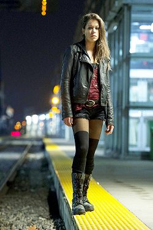
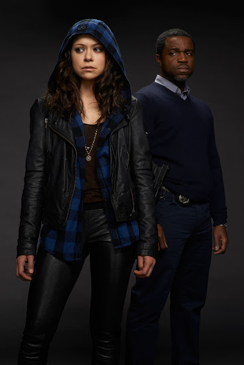
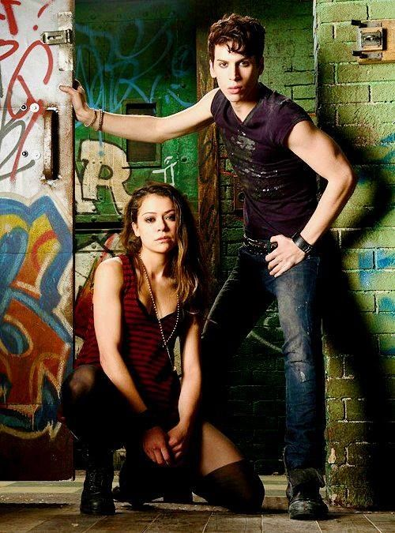
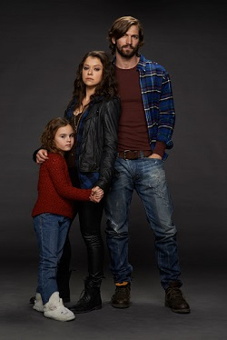
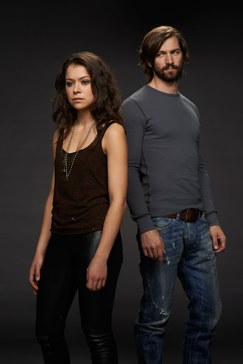

Sarah Manning

Sarah Manning is the lead character and main protagonist of the series, Orphan Black.
Sarah and her daughter, Kira, are considered significant and actively sought after by the Dyad Institute, among others, because she and her twin sister, Helena, are the only clones able to reproduce, and Kira is the first ever offspring of any of the clones.
Once merely a rebellious punk on the run hoping to eventually make a better life for her daughter and foster brother, continual shocks to her identity changes Sarah's plans in life, leaving her reeling and wondering who she really is. Originally as a scam to steal Beth's savings, she takes on the identity of recently-deceased Beth Childs and instead finds herself sucked into a hidden life-long conspiracy of illegal human cloning.
Personality
Sarah is a natural chameleon, street-smart and tough, a born outsider living on the fringes by her wits. According to Cosima, she possess a sense of humor that her clone, Beth, did not. Despite having a morally ambiguous compass, Sarah tries her best to set things right for the sake of closing the door on her past, having a sufficient amount of money, skipping town with Felix and ultimately, to reunite with her beloved but estranged daughter, Kira. During the time she has spent with the clones, Sarah has had to make the most difficult choices in her life; while she initially wanted part of the conspiracy problem the clones were facing, caring only about getting together enough money to start over somewhere else with Kira and Felix, she has since discovered that she cares about others more than she thought.
History
Sarah is part of the original batch of clones created for Project Leda, led by scientists Ethan and Susan Duncan, in London. The scientists then employed a woman named Amelia to carry her embryo, leading her to believe that the children would be for them. Amelia soon became suspicious of the circumstances and ran away with the twins in her womb. Knowing she wouldn't be able to keep them, she gave them away: Sarah to the state to become a ward, and Helena to the church.
Sarah's life began in an English orphanage and was bounced between foster homes until she ended up in "Carlton's pipeline" as a "child in the black". Carlton then handed her over to Mrs. S, who worked with "the Birdwatchers". When Sarah was around 8, Mrs. S decided to legitimize and adopt her and her foster brother Felix when she was around 8. When Sarah was 12 (14?), Mrs. S uprooted them under suspicious circumstances and moved with them from London to Canada. Sarah steadfastly remained the English punk, a street smart stray with a reckless streak and a loyal heart.
At one point, Sarah met and targeted Cal Morrison for a scam. However, the pair became intimate, and Sarah eventually had her first child, Kira, with him. Sarah, however, decided to have the child in secret and hid her from him. Mrs. S would then agree to raise Kira.
According to Sarah during her interrogation from Dyad during her unconditional surrender, she has had an abortion. It is unknown whether this is before or after Kira's birth.
Likely drawn into the seedy life of a thief and con-artist, Sarah gets herself involved with the violent drug dealer Vic Schmidt, seeing him as a way to get money fast and easy for the life she had envisioned for her daughter and herself. For almost a year, Sarah goes on the run with Vic, leaving Kira with Mrs. S. Even before her return, Sarah had asked Mrs. S for custody of Kira, but Mrs. S was unwilling to subject the little girl to such an unsavory life.
Tired of life with the clingy and abusive Vic, she left him and returned home to live with her foster brother Felix, but not before stealing a pack of cocaine from Vic.
Season 1
In "Natural Selection", Sarah arrives by train at the Huxley Station in hopes of reuniting and forming a better relationship with her eight-year-old daughter. There, she encounters Elizabeth 'Beth' Childs, a woman who eerily looks just like her that jumps in front of a train to her death. Visibly distraught at first sight, Sarah slowly sees a golden opportunity. She takes Beth's purse and meets up with her foster brother, Felix, and informs him of her plan to leave the town with him and Kira.
Realizing that Beth has money she can use, and thinking that Beth is her twin sister, Sarah decides to take on her identity. She changes her hair, learns Beth's accent, movements and signature, among others, through all the resources she could gather from her apartment.
Vic, still after the cocaine that Sarah stole from him, comes to town in search of her. With Felix's help, Sarah manages to elude Vic and in the process, convince everyone she knows to believe that it was her who had committed suicide at the train station—allowing her to continue on with her façade as Beth Childs. Vic unexpectedly grieves for her, heartbroken and in denial. In desperation, Felix and Sarah try to go Mrs. S to tell her that Sarah is alive, not wanting Kira to think that her mother is dead. However, Mrs. S is still wary of Sarah and refuses to let her get custody of Kira.
After several awkward, and sexual, encounters with Beth's boyfriend, Paul Dierden, Sarah finally manages to get a hold of Beth's money, but also finds out that things are more complicated than they seem as Beth Childs is a cop, currently suspended and under investigation for a civilian shooting. Sarah realizes this too late, and Felix has already done his part of the plan when Sarah decided that she wanted to abort their plans. Beth's partner, Art, who had grown suspicious of her, then takes Beth's money to hold against her until she is reinstated.
Planning to hang around only until she gets Beth's money back, Sarah, after several mysterious calls and messages, encounters her second clone: Katja Obinger, a sick German woman who looks exactly like her, only with short, red hair. Katja eventually realizes that she was not Beth, and is shot in the head a matter of seconds after asking Sarah what seemed like a riddle exchanged between the clones.
In "Instinct", a frantic Sarah finally takes the call from Beth's phone. The person on the other line advises Sarah to get rid of the body and take her briefcase for the samples they need that the German had promised them. Sarah then dumps her body one night, not realizing that her dumpsite was in fact an active quarry.
Sarah finally learns of the other clones and meets Alison Hendrix and Cosima Niehaus, her soccer mom and biology geek look-alikes in the process. They also meet Helena, a killer clone who believes that she is the original and claims that she and Sarah have a connection.
The cops then continue investigating the body they found at the quarry, Katja, and the clue-leaving suspect, Helena. Cosima asks Sarah to continue playing Beth for a while, so Sarah goes lengths to cover up the clones' identities, particularly since the prints that the cops retrieved from Katja's body would match Sarah's, who has a local record for assault and petty theft.
After being reinstated when cleared of the civilian shooting, Art finally returns the money to "Beth". Sarah then finds out that the money was actually Alison's contribution to the team dynamic she had with Cosima and Beth. Initially intending on running off with Kira and Felix with the money, Sarah realizes that Kira deserves a peaceful life and chooses to return the money to Alison.
Aside from her "clone club" problems, Sarah is also having problems at home. Not only is she pressured by Mrs. S into getting her life straight in exchange for a few visits with Kira, but Helena's dangerous interest and obsession with her becomes more evident as she continues to bother Sarah. And while Sarah forms an unlikely partnership with the paranoid Alison and the rumbling Cosima, the distrust between her and Beth's partner, Art, grows.
When Sarah was not able to make it to one of the visits Siobhan had set up for her and Kira, Alison stepped in to pretend to be her. Days later, Alison called in the favor and had Sarah play her during one of her suburban parties while they interrogated Alison's husband, Donnie, who she suspects is her monitor. Sarah and Alison dismiss this theory by the end of the day, believing her neighbor Ansley to be the real monitor.
Sarah also gets in trouble with ex-boyfriend Vic who, after seeing Alison and mistaking her for Sarah, has come after her for the finger he lost because of the cocaine she stole from him. Even after paying him, Vic stalks him but is finally turned away after a violent confrontation with Paul, who has fallen in love with Sarah.
Sarah also finds herself strangely attracted to Beth's boyfriend, Paul, and is even tempted to keep him around even after discovering that he may be connected to those behind their cloning. When both become suspicious of each other, they both try to come clean, with a few secrets up their sleeves. Eventually, however, Sarah finds herself telling Paul everything when she realizes that Paul can truly be trusted, and both soon enough give into their feelings.
Hearing from Cosima that she is becoming interested in the mysterious Delphine and the dangerously fascinating Dr. Aldous Leekie, Sarah tries to convince her to stay away from them, fearing for their safety. Cosima, at first ignores her and even engages in a relationship with Delphine, but later heeds her advice and finally investigates and discovers that Delphine and Leekie are conspirators with their creators.
Season 2
In "Nature Under Constraint and Vexed", it is revealed that Kira was kidnapped by an unknown organization.
In "Governed by Sound Reason and True Religion", it turns out Mrs. S took Kira and made it look like Rachel Duncan's People took her. In the end Sarah gets a phone call from Kira, Sarah & Art Work out the call came from a motel they go but the room in empty just one of Kira's drawing are on the bed as Art & Sarah see one of Rachel's people Art goes to deal with him as he is away doing that Sarah sees apart of Kira's clothing and following the bits of clothes takes her to a door she open to find a car next minute a hand is over her mouth.
Next Sarah she is in a car boot the man that helped Mrs. S take Kira is helping Sarah out the boot and taking the cuffs off next we see Mrs. S, She lets Sarah know her daughter is safe and take her to her when the get to a house Sarah remembers from her childhood the first place they lived and Sarah sees some old faces then she sees her daughter for the first time since her fake kidnapping as Sarah and Mrs. S talk she tell her that she is taking Kira to the UK just her and Kira. Sarah didn't like that and she shows Mrs. S the photo that her surrogate mother Amelia gave and told her that Mrs. S is "not who she says she is". She hands her the photograph involving Project LEDA from 1977 of a young woman and man, wearing lab coats, with their names, save for their title "Profs.", blacked out in the caption. Before Amelia could elaborate, she passes away from Helena stabbing her. Later at night as everyone is eat there is a phone call one of the people helping Mrs. S to get to the UK takes the call outside Sarah finds it fishy and asks the say its so not everyone knows we're there going, but Sarah don't like it so Sarah takes Kira up to bed but really she's going up to pack to take Kira with her when no one is looking she takes her daughter and gets in to a truck when she's doing that Mrs. S is picking up that something is right with her old friends then they hear the truck trying to start the guy that was help Mrs. s runs out to try and stop her with gun and smashes the car window well inside the house Mrs. S stabs the woman in each hand the goes out and shot the guy as the tuck goes Mrs.S lets it go by and goes back in to find out why. She told the bad guys about her plan and the woman said she found god, and god has money, then Mrs. S shot her.
Sarah goes too and meets her brother Felix then they drive off in the truck.
Upon retrieving Kira, she leaves her daughter with her ex-boyfriend, Kira's father, Cal Morrison, refusing to tell him about the clone conspiracy. Sarah battles Dyad and Rachel and soon discovers Helena survived after she shot her in the chest, much to her shock. When she digs into the origins of the experiment she is stunned to learn Mrs. S helped Ethan Duncan many years ago and remains distrustful of her foster mother. Sarah reluctantly considers bringing Kira to Dyad in order to try and save Cosima's life. Sarah arranges for Kira's bone marrow to be extracted and taken to Dyad for Cosima's treatment, however Rachel manages to kidnap Kira and destroys the bone marrow. Sarah surrenders to Dyad in hopes they will release Kira, Dyad plans on extracting one of her ovaries. Sarah manages to escape with Kira, thanks to Marion Bowles. Marion also introduces Sarah to one of the male clones created by the military.
Source: orphanblack.fandom.com